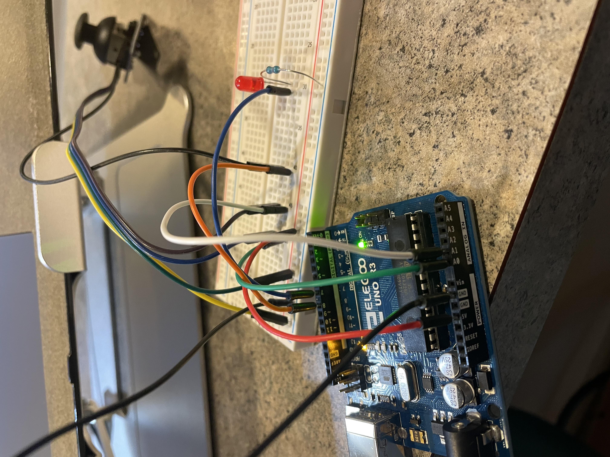
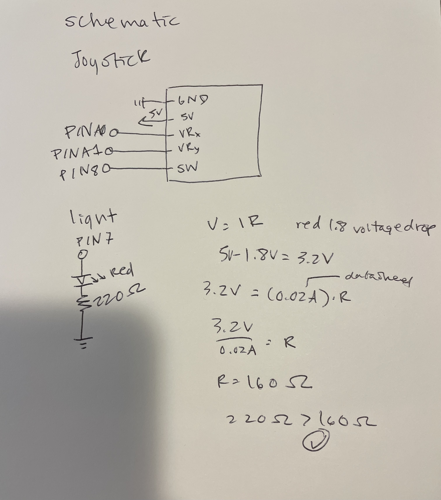
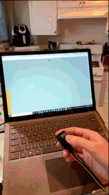
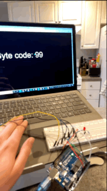

Alissa Acheson's Assignment 6!



Above is the circuit that contains the LED and joystick, the joystick is connected to ground, 5V power, A0 for X input, A1 for Y input, and Pin 8. The LED is connected to ground and PIN 7 through a 220 ohm resistor.

Above is the calculations for the resistor used, and schematic of the circuit.
Arduino Code for the joystick
//joystick code to communicate with web
int x = A0; // x positon of joystick A0 pin
int y = A1; // y positon of joystick A1 pin
int xval = 0; // sart at 0
int yval = 0; // start at 0
void setup() {
// start serial at 9600 baud
Serial.begin(9600);
// set the timeout for parseInt
Serial.setTimeout(10);
}
void loop() {
// read A0 pin
xval = analogRead(x);
// read A1 pin
yval = analogRead(y);
// all below prints to console
Serial.print("[");
Serial.print(xval);
Serial.print(",");
Serial.print(yval);
Serial.println("]");
}
P5 Code for the joystick
//the pieces of the code below was referenced from https://github.com/machineagency/hcde439/blob/master/p5-examples-and-addons/hcde439-example2/sketch.js
var serial; // variable to hold an instance of the serialport library
var portName = 'COM5' //rename to the name of your port
var dataarray = []; //some data coming in over serial!
var xPos = 0;
function setup() {
serial = new p5.SerialPort(); // make a new instance of the serialport library
serial.on('list', printList); // set a callback function for the serialport list event
serial.on('connected', serverConnected); // callback for connecting to the server
serial.on('open', portOpen); // callback for the port opening
serial.on('data', serialEvent); // callback for when new data arrives
serial.on('error', serialError); // callback for errors
serial.on('close', portClose); // callback for the port closing
serial.list(); // list the serial ports
serial.open(portName); // open a serial port
createCanvas(1200, 800);
background(156,175,136);;
}
// get the list of ports:
function printList(portList) {
// portList is an array of serial port names
for (var i = 0; i < portList.length; i++) {
// Display the list the console:
print(i + " " + portList[i]);
}
}
function serverConnected() {
print('connected to server.');
}
function portOpen() {
print('the serial port opened.')
}
function serialError(err) {
print('Something went wrong with the serial port. ' + err);
}
function portClose() {
print('The serial port closed.');
}
function serialEvent() {
if (serial.available()) {
var datastring = serial.readLine(); // readin some serial
var newarray;
try {
newarray = JSON.parse(datastring); // can we parse the serial
} catch(err) {
//console.log(err);
}
if (typeof(newarray) == 'object') {
dataarray = newarray;
}
console.log("got back " + datastring);
}
}
function graphData(newData) {
// map the range of the input to the window height:
var yPos = map(newData, 0, 1023, 0, height);
// draw the line
line(xPos, height, xPos, height - yPos);
// at the edge of the screen, go back to the beginning:
if (xPos >= width) {
xPos = 0;
// reset the background:
background(156,175,136); // sage green background
} else {
// pass
}
}
function draw() {
stroke('rgb(204,85,0)'); // burnt orange
graphData(dataarray[0]);
stroke('rgb(255,165,0)'); // orange
graphData(dataarray[1]);
xPos++;
}
Ardunio code for LED
//led connected to pin 7
const int LED = 7;
void setup() {
// Begin running serial monitor.
Serial.begin(9600);
// Set the timeout for parseInt
Serial.setTimeout(10);
// set LED output
pinMode(LED, OUTPUT);
}
void loop() {
//if serial data exists, read data
if (Serial.available() > 0) {
int inByte = Serial.read();
//send back data as raw binary
Serial.write(inByte);
//if space bar pressed
if (inByte == 32) {
//turn on red LED
digitalWrite(LED, HIGH);
}
//if "c" key pressed
if(inByte == 99) {
//turn off LED
digitalWrite(LED, LOW);
}
}
}
p5 code for LED
var serial; // variable to hold an instance of the serialport library
var portName = 'COM5' //rename to the name of your port
var inData; // variable to store data
function setup() {
serial = new p5.SerialPort(); // make a new instance of the serialport library
serial.on('list', printList); // set a callback function for the serialport list event
serial.on('connected', serverConnected); // callback for connecting to the server
serial.on('open', portOpen); // callback for the port opening
serial.on('data', serialEvent); // callback for when new data arrives
serial.on('error', serialError); // callback for errors
serial.on('close', portClose); // callback for the port closing
serial.list(); // list the serial ports
serial.open(portName); // open a serial port
createCanvas(1200, 800); // create a 1200x800 createCanvas
textSize(95); // making the text size large
}
// get the list of ports:
function printList(portList) {
// portList is an array of serial port names
for (var i = 0; i < portList.length; i++) {
// Display the list the console:
print(i + " " + portList[i]);
}
}
function serverConnected() {
print('connected to server.');
}
function portOpen() {
print('the serial port opened.')
}
function serialError(err) {
print('Something went wrong with the serial port. ' + err);
}
function portClose() {
print('The serial port closed.');
}
function serialEvent() {
if (serial.available()) { // if there's serial data
inData = serial.read(); // read the data
console.log("got back " + inData); // log the read data
}
}
function keyPressed() {
//console.log("writing key");
serial.write(key); // write key data to serial
}
function draw() {
background(0); //black background
fill(255); // white text
text("inByte code: " + inData, 100, 400); // display this text in this specified area of the canvas
}
Final Functionality
Below is the final operation, the joystick position affects the height and color of the webpage.

Below is the final operation, the LED turned on and off by spacebar and "c" key.
